在各个不同的平台上做过的算法题目。
[lintcode]
二叉树的前序遍历 - C++ [lintcode]
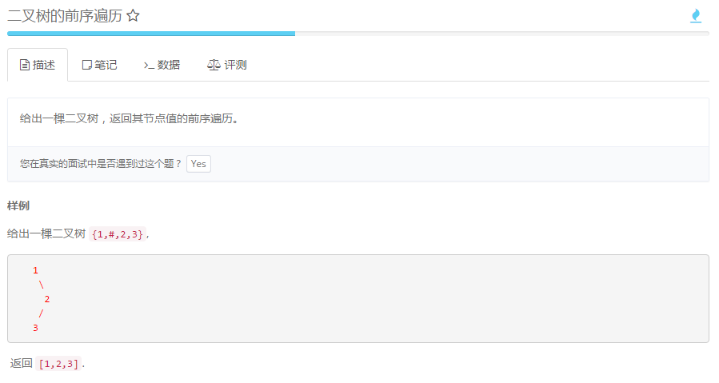 http://www.lintcode.com/zh-cn/problem/binary-tree-preorder-traversal/
二叉树的中序遍历 - C++ [lintcode]
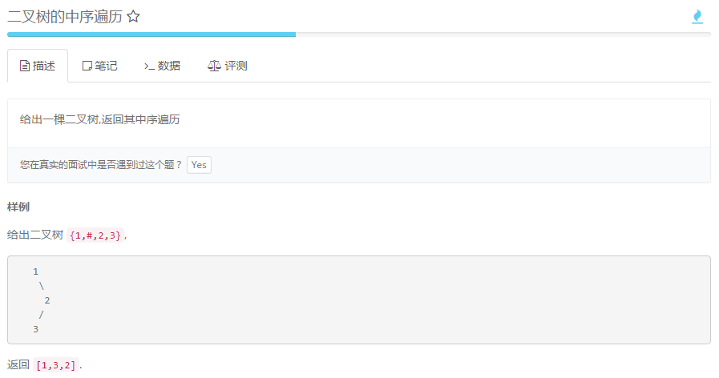 http://www.lintcode.com/zh-cn/problem/binary-tree-inorder-traversal/
二叉树的后序遍历 - C++ [lintcode]
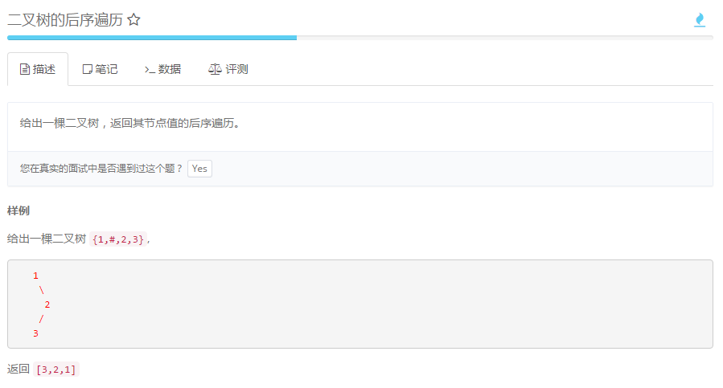 http://www.lintcode.com/zh-cn/problem/binary-tree-postorder-traversal/
二叉树的最大深度 - C++ [lintcode]
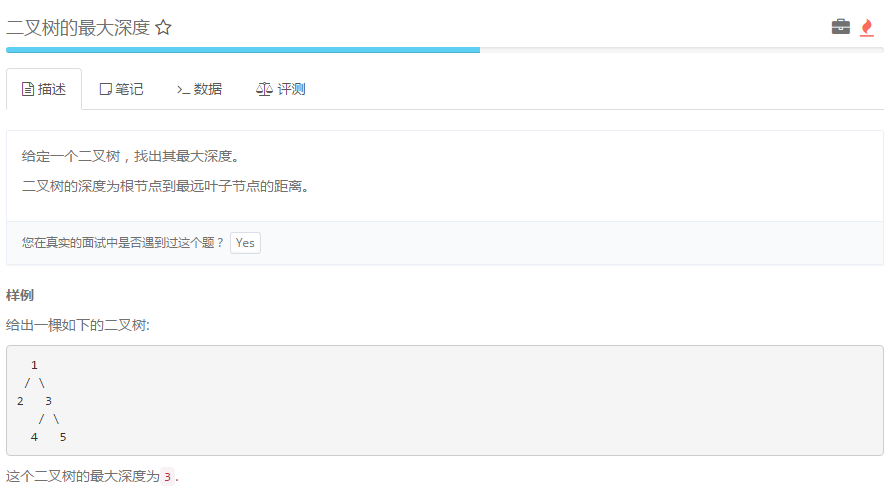 http://www.lintcode.com/zh-cn/problem/maximum-depth-of-binary-tree/
二叉树的最小深度 - C++ [lintcode]
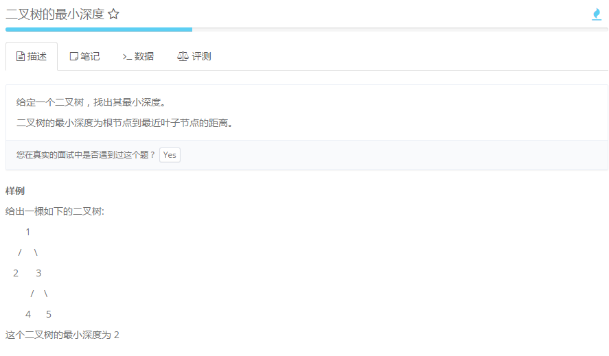 http://www.lintcode.com/zh-cn/problem/minimum-depth-of-binary-tree/
二叉树的层次遍历 II - C++ [lintcode]
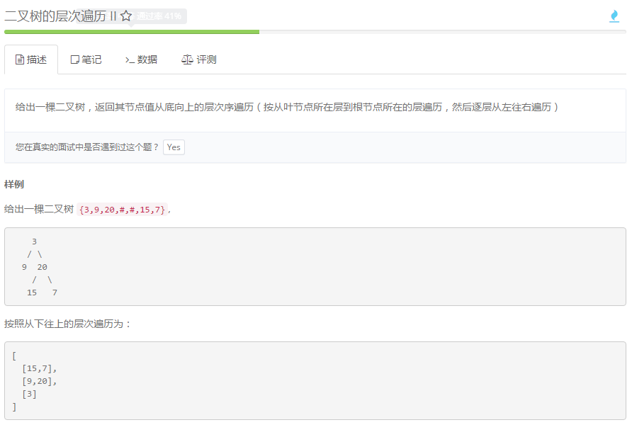 http://www.lintcode.com/zh-cn/problem/binary-tree-level-order-traversal-ii/
二叉树的锯齿形层次遍历 - C++ [lintcode]
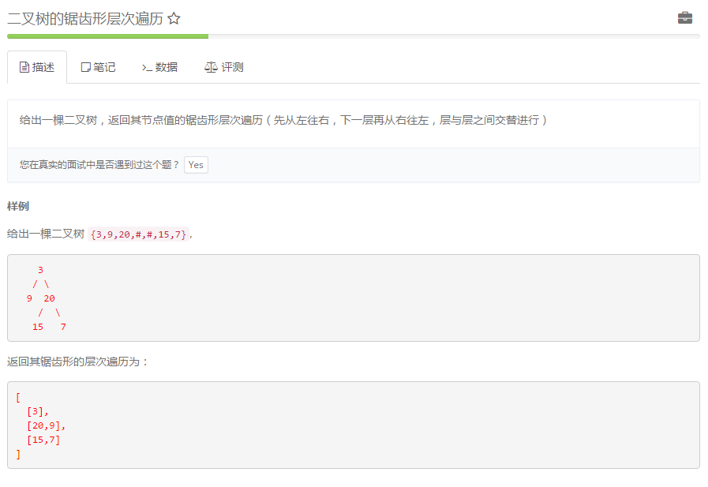 http://www.lintcode.com/zh-cn/problem/binary-tree-zigzag-level-order-traversal/
用栈实现队列 - C++ [lintcode]
http://www.lintcode.com/zh-cn/problem/implement-queue-by-two-stacks/
线段树的构造 - C++ [lintcode]
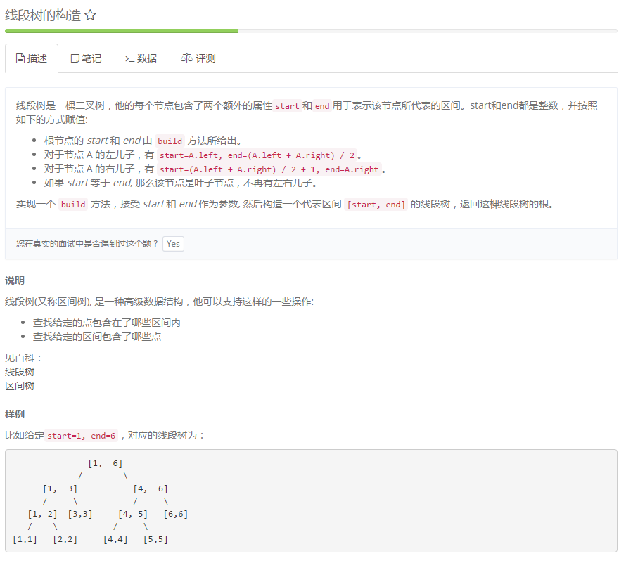 http://www.lintcode.com/zh-cn/problem/segment-tree-build/
线段树的查询 - C++ [lintcode]
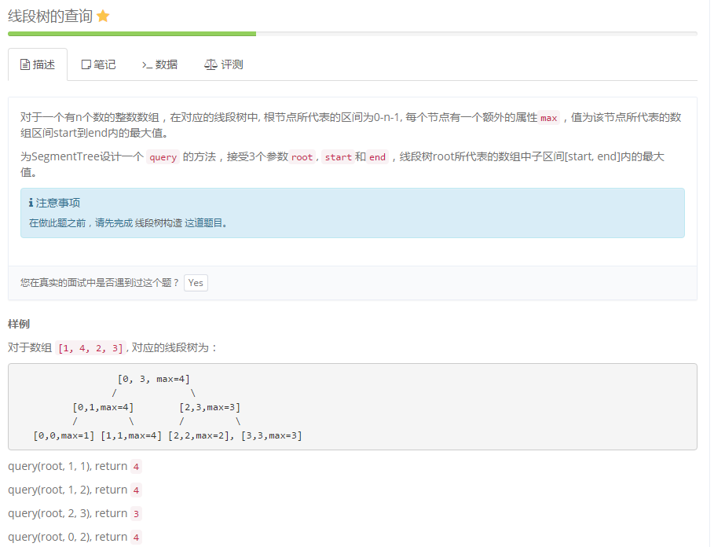 http://www.lintcode.com/zh-cn/problem/segment-tree-query/
线段树查询 II - C++ [lintcode]
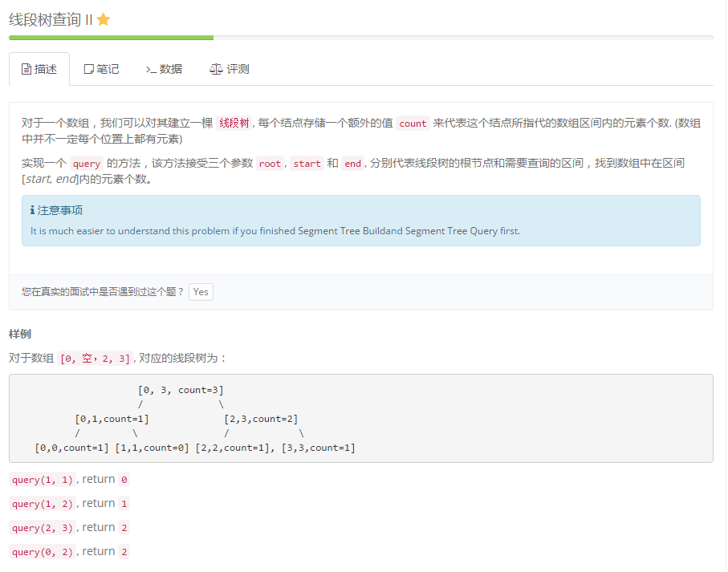 http://www.lintcode.com/zh-cn/problem/segment-tree-query-ii/
统计前面比自己小的数的个数 - C++ [lintcode]
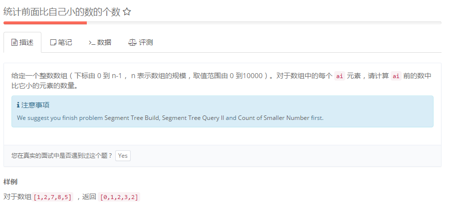 http://www.lintcode.com/zh-cn/problem/count-of-smaller-number-before-itself/
[nowcoder]
最小的K个数 C++ [nowcoder]
输入n个整数，找出其中最小的K个数。例如输入4,5,1,6,2,7,3,8这8个数字，则最小的4个数字是1,2,3,4,。 https://www.nowcoder.com/profile/6879987/codeBookDetail?submissionId=11047976
找出出现的次数超过数组长度的一半的数 C++ [nowcoder]
数组中有一个数字出现的次数超过数组长度的一半，请找出这个数字。例如输入一个长度为9的数组{1,2,3,2,2,2,5,4,2}。由于数字2在数组中出现了5次，超过数组长度的一半，因此输出2。如果不存在则输出0。 https://www.nowcoder.com/profile/6879987/codeBookDetail?submissionId=11047857
找到第一个只出现一次的字符 C++ [nowcoder]
在一个字符串(1<=字符串长度<=10000，全部由字母组成)中找到第一个只出现一次的字符,并返回它的位置。如果字符串为空,返回-1 https://www.nowcoder.com/profile/6879987/codeBookDetail?submissionId=11034739
找到第1500个丑数 C++ [nowcoder]
把只包含素因子2、3和5的数称作丑数（Ugly Number）。例如6、8都是丑数，但14不是，因为它包含因子7。 习惯上我们把1当做是第一个丑数。求按从小到大的顺序的第N个丑数。 https://www.nowcoder.com/profile/6879987/codeBookDetail?submissionId=11033314
打印所有数字中最小的一个 C++ [nowcoder]
输入一个正整数数组，把数组里所有数字拼接起来排成一个数，打印能拼接出的所有数字中最小的一个。例如输入数组{3，32，321}，则打印出这三个数字能排成的最小数字为321323。 https://www.nowcoder.com/profile/6879987/codeBookDetail?submissionId=11021544
整数中1出现的次数 C++ [nowcoder]
求出113的整数中1出现的次数,并算出1001300的整数中1出现的次数？为此他特别数了一下1~13中包含1的数字有1、10、11、12、13因此共出现6次,但是对于后面问题他就没辙了。ACMer希望你们帮帮他,并把问题更加普遍化,可以很快的求出任意非负整数区间中1出现的次数。 https://www.nowcoder.com/profile/6879987/codeBookDetail?submissionId=11014410
所有和为S的连续正数序列 C++ [nowcoder]
小明很喜欢数学,有一天他在做数学作业时,要求计算出9~16的和,他马上就写出了正确答案是100。但是他并不满足于此,他在想究竟有多少种连续的正数序列的和为100(至少包括两个数)。没多久,他就得到另一组连续正数和为100的序列:18,19,20,21,22。现在把问题交给你,你能不能也很快的找出所有和为S的连续正数序列? Good Luck! https://www.nowcoder.com/profile/6879987/codeBookDetail?submissionId=11007141
循环删除整数数列问题 C++ [nowcoder]
每年六一儿童节,牛客都会准备一些小礼物去看望孤儿院的小朋友,今年亦是如此。HF作为牛客的资深元老,自然也准备了一些小游戏。其中,有个游戏是这样的:首先,让小朋友们围成一个大圈。然后,他随机指定一个数m,让编号为0的小朋友开始报数。每次喊到m-1的那个小朋友要出列唱首歌,然后可以在礼品箱中任意的挑选礼物,并且不再回到圈中,从他的下一个小朋友开始,继续0…m-1报数….这样下去….直到剩下最后一个小朋友,可以不用表演,并且拿到牛客名贵的“名侦探柯南”典藏版(名额有限哦!!^_^)。请你试着想下,哪个小朋友会得到这份礼品呢？(注：小朋友的编号是从0到n-1) https://www.nowcoder.com/profile/6879987/codeBookDetail?submissionId=10998340
图中是否包含某条路径 C++ [nowcoder]
请设计一个函数，用来判断在一个矩阵中是否存在一条包含某字符串所有字符的路径。路径可以从矩阵中的任意一个格子开始，每一步可以在矩阵中向左，向右，向上，向下移动一个格子。如果一条路径经过了矩阵中的某一个格子，则该路径不能再进入该格子。 例如[a b c e s f c s a d e e]是3*4矩阵，其包含字符串“bcced”的路径，但是矩阵中不包含“abcb”路径，因为字符串的第一个字符b占据了矩阵中的第一行第二个格子之后，路径不能再次进入该格子。 https://www.nowcoder.com/profile/6879987/codeBookDetail?submissionId=10995271
机器人能够达到多少个格子 C++ [nowcoder]
地上有一个m行和n列的方格。一个机器人从坐标0,0的格子开始移动，每一次只能向左，右，上，下四个方向移动一格，但是不能进入行坐标和列坐标的数位之和大于k的格子。 例如，当k为18时，机器人能够进入方格（35,37），因为3+5+3+7 = 18。但是，它不能进入方格（35,38），因为3+5+3+8 = 19。请问该机器人能够达到多少个格子？ https://www.nowcoder.com/profile/6879987/codeBookDetail?submissionId=10992716
找到只出现一次的数字 C++ [nowcoder]
Given an array of integers, every element appears twice except for one. Find that single one. Note: Your algorithm should have a linear runtime complexity. Could you implement it without using extra memory? https://www.nowcoder.com/profile/6879987/codeBookDetail?submissionId=10769216
查找数组中未出现的最小正整数 C++ [nowcoder]
请设计一个高效算法，查找数组中未出现的最小正整数。 给定一个整数数组A和数组的大小n，请返回数组中未出现的最小正整数。保证数组大小小于等于500。 测试样例： [-1,2,3,4],4 返回：1 https://www.nowcoder.com/profile/6879987/codeBookDetail?submissionId=10735711
数组的单调和 C++ [nowcoder]
现定义数组单调和为所有元素i的f(i)值之和。这里的f(i)函数定义为元素i左边(不包括其自身)小于等于它的数字之和。请设计一个高效算法，计算数组的单调和。 给定一个数组A同时给定数组的大小n，请返回数组的单调和。保证数组大小小于等于500，同时保证单调和不会超过int范围。 测试样例： [1,3,5,2,4,6],6 返回：27
https://www.nowcoder.com/profile/6879987/codeBookDetail?submissionId=10733959
|
|
C是否是A和B的混编 C++ [nowcoder]
A、B和C。如果C包含且仅包含来自A和B的所有字符，而且在C中属于A的字符之间保持原来在A中的顺序，属于B的字符之间保持原来在B中的顺序，那么称C是A和B的混编。实现一个函数，判断C是否是A和B的混编。 给定三个字符串A,B和C，及他们的长度。请返回一个bool值，代表C是否是A和B的混编。保证三个串的长度均小于等于100。 测试样例： “ABC”,3,“12C”,3,“A12BCC”,6 返回：true https://www.nowcoder.com/profile/6879987/codeBookDetail?submissionId=10731304
|
|
字符串交错组成 C++ [nowcoder]
对于三个字符串A，B，C。我们称C由A和B交错组成当且仅当C包含且仅包含A，B中所有字符，且对应的顺序不改变。请编写一个高效算法，判断C串是否由A和B交错组成。 给定三个字符串A,B和C，及他们的长度。请返回一个bool值，代表C是否由A和B交错组成。保证三个串的长度均小于等于100。 测试样例： “ABC”,3,“12C”,3,“A12BCC”,6 返回：true
https://www.nowcoder.com/profile/6879987/codeBookDetail?submissionId=10730897
|
|
最小编辑代价 C++ [nowcoder]
对于两个字符串A和B，我们需要进行插入、删除和修改操作将A串变为B串，定义c0，c1，c2分别为三种操作的代价，请设计一个高效算法，求出将A串变为B串所需要的最少代价。 给定两个字符串A和B，及它们的长度和三种操作代价，请返回将A串变为B串所需要的最小代价。保证两串长度均小于等于300，且三种代价值均小于等于100。 测试样例： “abc”,3,“adc”,3,5,3,100 返回：8
https://www.nowcoder.com/profile/6879987/codeBookDetail?submissionId=10728936
|
|
最大间隔 C++ [nowcoder]
给定一个递增序列，a1 <a2 <...<an 。定义这个序列的最大间隔为d=max{ai+1 - ai }(1≤i<n),现在要从a2 ,a3 ..an-1中删除一个元素。问剩余序列的最大间隔最小是多少？ https://www.nowcoder.com/profile/6879987/codeBookDetail?submissionId=10725149
搬圆桌 c++ [nowcoder]
现在有一张半径为r的圆桌，其中心位于(x,y)，现在他想把圆桌的中心移到(x1,y1)。每次移动一步，都必须在圆桌边缘固定一个点然后将圆桌绕这个点旋转。问最少需要移动几步。
https://www.nowcoder.com/profile/6879987/codeBookDetail?submissionId=10724077
|
|
裁减网格纸 C++ [nowcoder]
度度熊有一张网格纸，但是纸上有一些点过的点，每个点都在网格点上，若把网格看成一个坐标轴平行于网格线的坐标系的话，每个点可以用一对整数x，y来表示。度度熊必须沿着网格线画一个正方形，使所有点在正方形的内部或者边界。然后把这个正方形剪下来。问剪掉正方形的最小面积是多少。 https://www.nowcoder.com/profile/6879987/codeBookDetail?submissionId=10721856
|
|
罪犯转移 C++ [nowcoder]
C市现在要转移一批罪犯到D市，C市有n名罪犯，按照入狱时间有顺序，另外每个罪犯有一个罪行值，值越大罪越重。现在为了方便管理，市长决定转移入狱时间连续的c名犯人，同时要求转移犯人的罪行值之和不超过t，问有多少种选择的方式？
https://www.nowcoder.com/profile/6879987/codeBookDetail?submissionId=10720643
|
|
首个重复字符 C++ [nowcoder]
对于一个字符串，请设计一个高效算法，找到第一次重复出现的字符。 给定一个字符串(不一定全为字母)A及它的长度n。请返回第一个重复出现的字符。保证字符串中有重复字符，字符串的长度小于等于500。 测试样例： “qywyer23tdd”,11 返回：y
https://www.nowcoder.com/profile/6879987/codeBookDetail?submissionId=10689361
棋子翻转
在4x4的棋盘上摆满了黑白棋子，黑白两色的位置和数目随机其中左上角坐标为(1,1),右下角坐标为(4,4),现在依次有一些翻转操作，要对一些给定支点坐标为中心的上下左右四个棋子的颜色进行翻转，请计算出翻转后的棋盘颜色。 给定两个数组A和f,分别为初始棋盘和翻转位置。其中翻转位置共有3个。请返回翻转后的棋盘。 测试样例： [[0,0,1,1],[1,0,1,0],[0,1,1,0],[0,0,1,0]],[[2,2],[3,3],[4,4]] 返回：[[0,1,1,1],[0,0,1,0],[0,1,1,0],[0,0,1,0]]
https://www.nowcoder.com/profile/6879987/codeBookDetail?submissionId=10681526
|
|
最大差值 C++ [nowcoder]
有一个长为n的数组A，求满足0≤a≤b
直方图内最大矩形 C++ [nowcoder]
有一个直方图，用一个整数数组表示，其中每列的宽度为1，求所给直方图包含的最大矩形面积。比如，对于直方图[2,7,9,4],它所包含的最大矩形的面积为14(即[7,9]包涵的7x2的矩形)。 给定一个直方图A及它的总宽度n，请返回最大矩形面积。保证直方图宽度小于等于500。保证结果在int范围内。 测试样例： [2,7,9,4,1],5 返回：14
|
|
之字形打印矩阵 C++ [nowcoder]
对于一个矩阵，请设计一个算法，将元素按“之”字形打印。具体见样例。 给定一个整数矩阵mat，以及他的维数nxm，请返回一个数组，其中元素依次为打印的数字。 测试样例： [[1,2,3],[4,5,6],[7,8,9],[10,11,12]],4,3 返回：[1,2,3,6,5,4,7,8,9,12,11,10]
|
|
相邻最大差值 c++ [nowcoder]
请设计一个复杂度为O(n)的算法，计算一个未排序数组中排序后相邻元素的最大差值。 给定一个整数数组A和数组的大小n，请返回最大差值。保证数组元素个数大于等于2小于等于500。 测试样例： [9,3,1,10],4 返回：6
|
|
二分查找 C++ [nowcoder]
对于一个有序数组，我们通常采用二分查找的方式来定位某一元素，请编写二分查找的算法，在数组中查找指定元素。 给定一个整数数组A及它的大小n，同时给定要查找的元素val，请返回它在数组中的位置(从0开始)，若不存在该元素，返回-1。若该元素出现多次，请返回第一次出现的位置。 测试样例： [1,3,5,7,9],5,3 返回：1
https://www.nowcoder.com/profile/6879987/codeBookDetail?submissionId=10607745
|
|
最高分是多少
老师想知道从某某同学当中，分数最高的是多少，现在请你编程模拟老师的询问。当然，老师有时候需要更新某位同学的成绩. https://www.nowcoder.com/profile/6879987/codeBookDetail?submissionId=10595364
从上往下打印二叉树
从上往下打印出二叉树的每个节点，同层节点从左至右打印。 https://www.nowcoder.com/profile/6879987/codeBookDetail?submissionId=10591248
顺时针打印矩阵 C++ [nowcoder]
输入一个矩阵，按照从外向里以顺时针的顺序依次打印出每一个数字，例如，如果输入如下矩阵： 1 2 3 4 5 6 7 8 9 10 11 12 13 14 15 16 则依次打印出数字1,2,3,4,8,12,16,15,14,13,9,5,6,7,11,10. https://www.nowcoder.com/profile/6879987/codeBookDetail?submissionId=10572756
树的子结构 C++ [nowcoder]
输入两棵二叉树A，B，判断B是不是A的子结构。（ps：我们约定空树不是任意一个树的子结构）
https://www.nowcoder.com/profile/6879987/codeBookDetail?submissionId=10561636
|
|
二叉树的镜像 C++ [nowcoder]
操作给定的二叉树，将其变换为源二叉树的镜像。
合并两个排序的链表 C++ [nowcoder]
输入两个单调递增的链表，输出两个链表合成后的链表，当然我们需要合成后的链表满足单调不减规则。 https://www.nowcoder.com/profile/6879987/codeBookDetail?submissionId=10559603
调整数组顺序使奇数位于偶数前面 C++ [nowcoder]
输入一个整数数组，实现一个函数来调整该数组中数字的顺序，使得所有的奇数位于数组的前半部分，所有的偶数位于位于数组的后半部分，并保证奇数和奇数，偶数和偶数之间的相对位置不变。 https://www.nowcoder.com/profile/6879987/codeBookDetail?submissionId=10556963
滑动窗口的最大值 C++ [nowcoder]
给定一个数组和滑动窗口的大小，找出所有滑动窗口里数值的最大值。例如，如果输入数组{2,3,4,2,6,2,5,1}及滑动窗口的大小3，那么一共存在6个滑动窗口，他们的最大值分别为{4,4,6,6,6,5}； 针对数组{2,3,4,2,6,2,5,1}的滑动窗口有以下6个： {[2,3,4],2,6,2,5,1}， {2,[3,4,2],6,2,5,1}， {2,3,[4,2,6],2,5,1}， {2,3,4,[2,6,2],5,1}， {2,3,4,2,[6,2,5],1}， {2,3,4,2,6,[2,5,1]}。 https://www.nowcoder.com/profile/6879987/codeBookDetail?submissionId=10555019
和为S的两个数字 C++ [nowcoder]
输入一个递增排序的数组和一个数字S，在数组中查找两个数，是的他们的和正好是S，如果有多对数字的和等于S，输出两个数的乘积最小的。 https://www.nowcoder.com/profile/6879987/codeBookDetail?submissionId=10523746
链表中环的入口结点
一个链表中包含环，请找出该链表的环的入口结点。
构建乘积数组
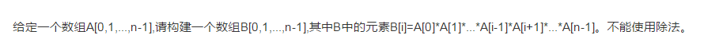
数组中重复的数字
在一个长度为n的数组里的所有数字都在0到n-1的范围内。 数组中某些数字是重复的，但不知道有几个数字是重复的。也不知道每个数字重复几次。请找出数组中任意一个重复的数字。 例如，如果输入长度为7的数组{2,3,1,0,2,5,3}，那么对应的输出是重复的数字2或者3。
不用加减乘除做加法
写一个函数，求两个整数之和，要求在函数体内不得使用
求1+2+3+…+n
|
|
栈的压入、弹出序列
输入两个整数序列，第一个序列表示栈的压入顺序，请判断第二个序列是否为该栈的弹出顺序。假设压入栈的所有数字均不相等。例如序列1,2,3,4,5是某栈的压入顺序，序列4，5,3,2,1是该压栈序列对应的一个弹出序列，但4,3,5,1,2就不可能是该压栈序列的弹出序列。（注意：这两个序列的长度是相等的）
包含min函数的栈
定义栈的数据结构，请在该类型中实现一个能够得到栈最小元素的min函数。
反转链表
输入一个链表，反转链表后，输出链表的所有元素。
链表中倒数第k个结点
输入一个链表，输出该链表中倒数第k个结点。
数值的整数次方
给定一个double类型的浮点数base和int类型的整数exponent。求base的exponent次方。
二进制中1的个数
输入一个整数，输出该数二进制表示中1的个数。其中负数用补码表示。
矩形覆盖
我们可以用21的小矩形横着或者竖着去覆盖更大的矩形。请问用n个21的小矩形无重叠地覆盖一个2*n的大矩形，总共有多少种方法？
变态跳台阶
一只青蛙一次可以跳上1级台阶，也可以跳上2级……它也可以跳上n级。求该青蛙跳上一个n级的台阶总共有多少种跳法。
跳台阶
一只青蛙一次可以跳上1级台阶，也可以跳上2级。求该青蛙跳上一个n级的台阶总共有多少种跳法。
斐波那契数列
大家都知道斐波那契数列，现在要求输入一个整数n，请你输出斐波那契数列的第n项。
旋转数组的最小数字
把一个数组最开始的若干个元素搬到数组的末尾，我们称之为数组的旋转。 输入一个非递减排序的数组的一个旋转，输出旋转数组的最小元素。 例如数组{3,4,5,1,2}为{1,2,3,4,5}的一个旋转，该数组的最小值为1。 NOTE：给出的所有元素都大于0，若数组大小为0，请返回0。
用两个栈实现队列
用两个栈来实现一个队列，完成队列的Push和Pop操作。 队列中的元素为int类型。
重建二叉树
输入某二叉树的前序遍历和中序遍历的结果，请重建出该二叉树。假设输入的前序遍历和中序遍历的结果中都不含重复的数字。例如输入前序遍历序列{1,2,4,7,3,5,6,8}和中序遍历序列{4,7,2,1,5,3,8,6}，则重建二叉树并返回。 https://www.nowcoder.com/profile/6879987/codeBookDetail?submissionId=10499929
|
|
从尾到头打印链表
输入一个链表，从尾到头打印链表每个节点的值。 /** * struct ListNode { * int val; * struct ListNode next; ListNode(int x) : * val(x), next(NULL) { * } * }; / class Solution { public: vector
二维数组中的查找
在一个二维数组中，每一行都按照从左到右递增的顺序排序，每一列都按照从上到下递增的顺序排序。请完成一个函数，输入这样的一个二维数组和一个整数，判断数组中是否含有该整数。